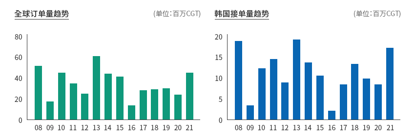
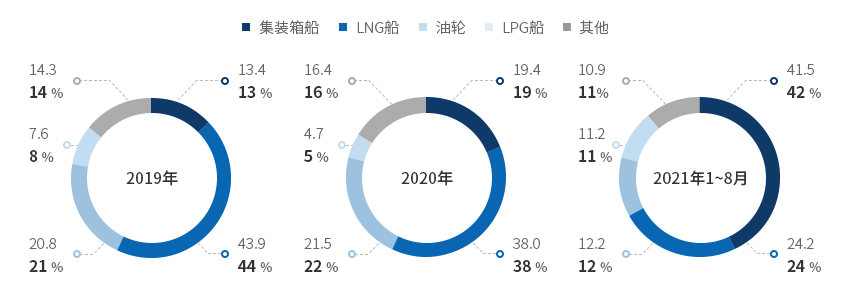
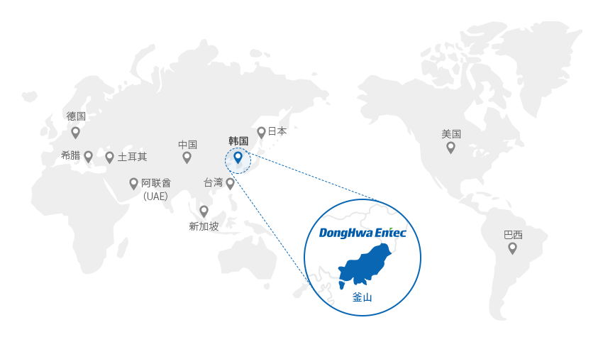
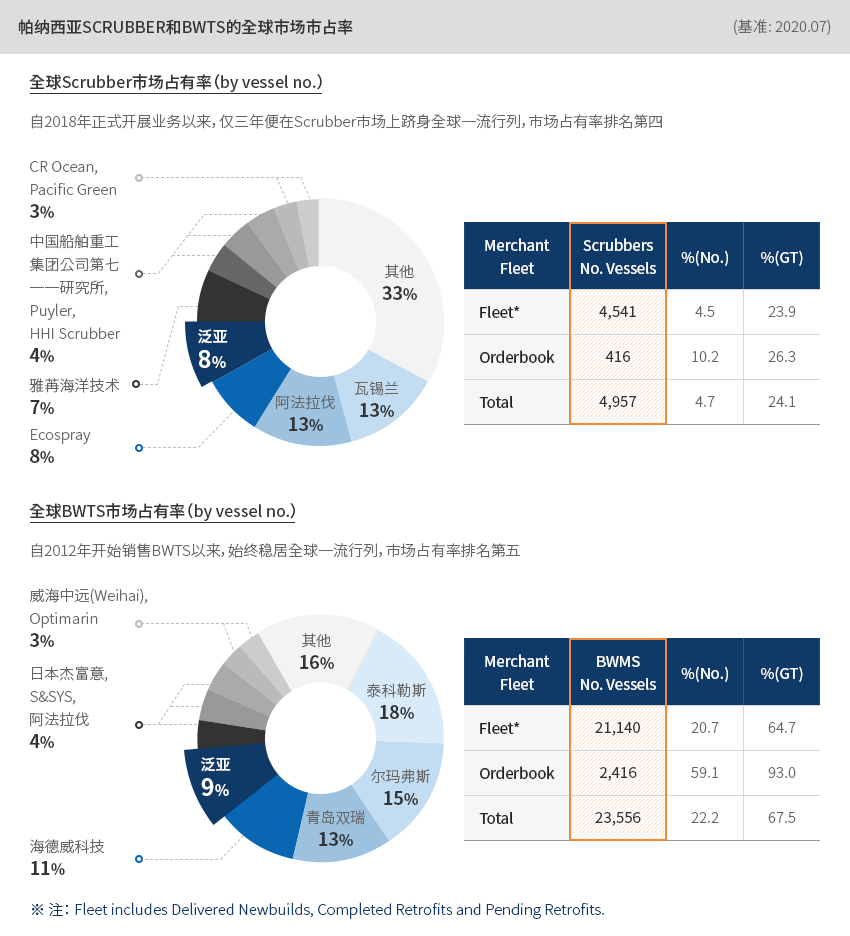
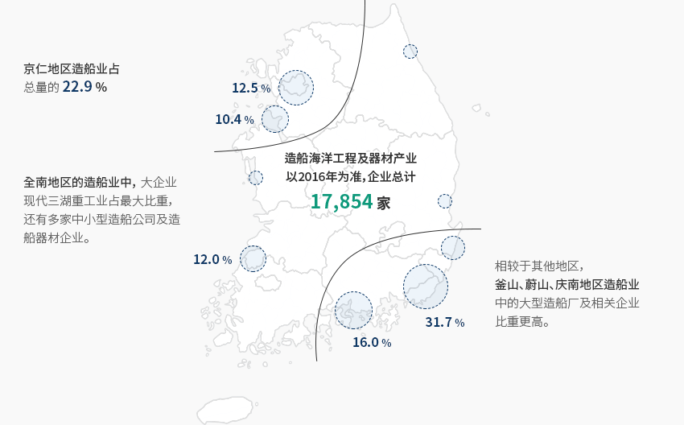
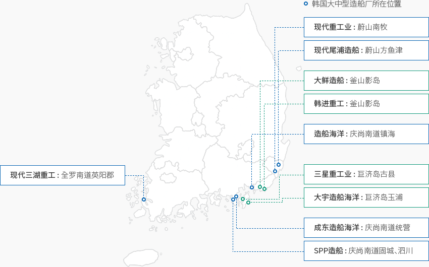

造船及海洋工程
- Home
- Why KOREA
- 产业
- 造船及海洋工程
-
韩国造船·海洋工程产业 具备全球竞争力 关闭内容韩国造船、海洋工程产业的 具备全球竞争力国际海事组织（IMO）正在持续加强环境监管，随着船舶大气污染物质和温室气体的减排标准收紧，
现有船舶燃料正在转向清洁化。
受能源模式变化和船舶智能化影响，全球造船与器材行业正在针对基于低碳和无碳燃料的LNG船、
氢能船、氨船、电动船等船舶提前研发技术。此外，还依托不断发展的ICT技术，同步推动船舶智能化。因此，韩国造船与器材企业很早就专注于产业产品和技术的高附加值、环保、智能化，进而掌握全球竞争力。韩国本土造船厂在高附加值和环保船舶领域具有技术竞争力，其接单量时隔八年再创新高。
2021年船舶接单量达到1,744万CGT，同比增长112%。
从历年数据来看，上述订单是2013年（1,844万CGT）以后时隔八年的最高记录。"全球订单量及韩国造船厂接单量"全球订单量趋势 (单位: 百万 CGT)韩国接单量趋势 (单位: 百万 CGT) ※ 备注：年度为准（2022年1月2日）
※ 备注：年度为准（2022年1月2日）
※ 资料来源：Clarksons -
韩国造船厂接单量 2008年以来增幅最大 打开内容韩国造船厂接单量 自2008年以来增幅最大韩国各类船舶接单比重从高到低依次为集装箱船、LNG船、油轮。
海运运费飙升和全球物流量增加等因素促使全球集装箱订单旺盛，因而集装箱船订单占比最高（41.5%，2021年1～8月）。
同时，LNG船以24.2%位居第二。这是因为韩国依托强大的技术竞争力，
在订单占有率中具有压倒性优势，加之IMO加强海洋环境监管等因素，使得全球LNG船订单增加。"韩国各类船舶的接单比重及增长率"(单位: CGT)韩国各类船舶的接单比重及增长率 船舶种类, 年度 船舶种类 2019年 2020年 2021年 1~8月 比重 增长率 比重 增长率 比重 增长率 集装箱船 13.4 -43.4 19.4 44.9 41.5 114.0 LNG船 43.9 -1.0 38.0 -13.4 24.2 -36.4 油轮 20.8 20.9 21.5 3.7 12.2 -43.3 LPG船 7.6 216.0 4.7 -38.6 11.2 138.4 기타 14.3 15.3 16.4 14.4 10.9 -33.4
韩国各类船舶的接单比重及增长率 船舶种类, 年度 船舶种类 2019年 2020年 2021年 1~8月 比重 增长率 比重 增长率 比重 增长率 集装箱船 13.4 -43.4 19.4 44.9 41.5 114.0 LNGG船 43.9 -1.0 38.0 -13.4 24.2 -36.4 油轮 20.8 20.9 21.5 3.7 12.2 -43.3 LPGG船 7.6 216.0 4.7 -38.6 11.2 138.4 其他 14.3 15.3 16.4 14.4 10.9 -33.4 ※ 备注：同比增长率
※ 资料来源：Clarksons -
跨国企业进军韩国的 主要案例 打开内容跨国企业进军韩国的 主要案例
 东和恩泰（Donghwa Entec），凭借热能交换技术成为“世界级企业”。(株)东和恩泰创立于1980年，从维修船舶热交换机起家，如今既是船舶热交换机领域的顶级产品供应商，
东和恩泰（Donghwa Entec），凭借热能交换技术成为“世界级企业”。(株)东和恩泰创立于1980年，从维修船舶热交换机起家，如今既是船舶热交换机领域的顶级产品供应商，
也是发电与成套设备产业的专业热交换机制造商。
特别是在LNG运输船、天然气燃料船、LNG-FSRU等船舶用超低温热交换机领域，
东和恩泰是一家具有世界最强技术实力的造船器材中坚企业。东和恩泰成立其他中坚企业所没有的大型研究所，不惜投入大量资金，
以求在能源和环境领域掌握独立技术能力。2021年8月，韩国燃气公社的“韩国型天然气液化工艺（KSMR）
实证设备”进入试运行，其关键器材冷箱（Cold Box）便由东和恩泰开发，并向主要造船厂供货，目前处于试运行阶段。
 帕纳希亚（PANASIA），环保“硫氧化物减排装置（Scrubber）”占有率位居全球第四。帕纳希亚是一家全球环保能源设备企业，从事水质、大气环境、新再生能源供给设备业务。
帕纳希亚（PANASIA），环保“硫氧化物减排装置（Scrubber）”占有率位居全球第四。帕纳希亚是一家全球环保能源设备企业，从事水质、大气环境、新再生能源供给设备业务。
初期主要制作水位测量控制设备（TLGS），2004年开发出船舶平衡水处理装置（BWTS），
加大力度应对关于船舶的国际环境监管，并成为一家环保船舶零部件企业。
帕纳希亚的船舶平衡水处理装置“GloEn-Patrol”采用滤芯过滤物理处理和紫外线杀菌技术，
为100%物理处理方式，被誉为最环保、最安全的装置。此外，国际海事组织（IMO）出台《IMO 2020》，限制船舶含硫量，保护大气环境。
为此，帕纳希亚在韩国率先开发出船舶专用硫氧化物环保减排装置。
主要产品在全球范围内拥有250多项专利，其中依托韩国本土技术开发的硫氧化物减排装置目前在全球拥有最大份额。
为了正式走向全球市场，帕纳希亚还设有日本、中国、荷兰三家海外法人及43个海外分支机构。帕纳西亚SCRUBBER和BWTS的全球市场市占率 (基准: 2020.07)全球Scrubber市场占有率（by vessel no.）自2018年正式开展业务以来，仅三年便在Scrubber市场上跻身全球一流行列，市场占有率排名第四
- PANASIA - 8%
- Other - 33%
- WartSila - 13%
- Alfa Laval - 13%
- Ecospray - 8%
- Yara Marine - 7%
- Yara Marine - 7%
- CR Ocean, Pacific Green - 3%
全球Scrubber市场占有率 Merchant Fleet Scrubbers No. Vessels %(No.) %(GT) Fleet* 4,541 4.5 23.9 Orderbook 416 10.2 26.3 Total 4,957 4.7 24.1 全球BWTS市场占有率（by vessel no.）自2012年开始销售BWTS以来，始终稳居全球一流行列，市场占有率排名第五
- PANASIA - 9%
- TechCross - 18%
- Other - 16%
- Erma First - 15%
- Sunrui - 13%
- Qingdao Headway - 11%
- Qingdao Headway - 11%
- COSCO(Weihai), Optimarin - 3%
全球BWTS市场占有率 Merchant Fleet Scrubbers No. Vessels %(No.) %(GT) Fleet* 21,140 20.7 64.7 Orderbook 2,416 59.1 93.0 Total 23,556 22.2 67.5 ※ 注： Fleet includes Delivered Newbuilds, Completed Retrofits and Pending Retrofits.
-
造船与器材产业回升 造船业有望再次带动经济腾飞 打开内容造船与器材产业回升 造船业有望再次带动经济腾飞全球金融危机以来，韩国经济增长急剧放缓很大程度上是因为第一大支柱产业“造船与器材产业”低迷不振。
东南地区的造船与器材产业是韩国第一大支柱产业，2001～2008年对当地经济增长的平均贡献度达到0.9%p，
但2011～2019年跌至负数（-0.4%p），未能对增长作出贡献。然而，造船业迎来复苏机遇，不仅具有带动就业和创造附加值等直接波及效果，还对钢铁、化学、
金属等上游产业回暖产生积极影响。特别是，随着韩国政府出台积极的扶持政策，造船与器材行业的复苏进一步加快。
最近，韩国政府发布《K-造船再腾飞战略》，落实捍卫造船强国地位的计划并积极提供支持。最近，国际社会加强海运领域环境监管，预计现有的化石燃料船舶将逐渐转型为使用无碳或低碳燃料的环保船舶。
因此，韩国政府认为这种转型将决定未来市场格局，进而制定（2018年12月）
并实施（2020年1月）《环保船舶开发与普及促进法（简称“环保船舶法”）》。
此外，韩国政府还通过《韩国型环保船舶（Greenship-K）普及实施规划（2020～2030）》
制定中长期战略，鼓励开发和普及环保船舶。"K-造船再腾飞战略"K-造船再腾飞战略 名称, 内容 名称 内容 K-造船再腾飞战略1)
(‘21.9)- 具备与接单竞争力相匹配的生产能力
- 引领环保和智能化
- 增强造船产业生态系统竞争力
※ 注: 1) 目标是2022年培养8000名造船人才，2030年生产效率提高30%、
环保/自主航行船舶位居全球第一、建设造船产业健康生态系统。
※ 资料来源：产业通商资源部报道资料（2021年4月4日） -
韩国造船海洋工程及器材业 主要区位情况 打开内容韩国造船海洋工程及器材业的 主要区位情况韩国造船海洋工程企业主要集中于东南地区（釜山、蔚山、庆南）和部分首都地区。尤其，78.2%的造船海洋工程器材企业位于东南地区，可见东南地区在韩国造船产业中占据核心地位。
东南地区拥有韩国船舶及器材产业集群，可以建立活跃的产业网络。造船海洋工程及器材产业以2016年为准，企业总计17,854家京仁地区造船业占总量的22.9%。全南地区的造船业中，大企业现代三湖重工业占最大比重，还有多家中小型造船公司及造船器材企业。相较于其他地区，釜山、蔚山、庆南地区造船业中的大型造船厂及相关企业比重更高。 ※ 资料来源：《建立新海洋城市的必要性研究》，KMI，2019年1月
※ 资料来源：《建立新海洋城市的必要性研究》，KMI，2019年1月
※ 资料协助：韩国海洋大学"韩国大中型造船厂所在位置"韩国大中型造船厂大多位于庆尚道，只有现代三湖重工位于全罗道。韩国大中型造船厂所在位置- 现代重工业：蔚山南牧
- 现代尾浦造船：蔚山方鱼津
- 大鲜造船：釜山影岛
- 韩进重工：釜山影岛
- 造船海洋：庆尚南道镇海
- 三星重工业：巨济岛古县
- 大宇造船海洋：巨济岛玉浦
- 成东造船海洋：庆尚南道统营
- SPP造船：庆尚南道固城、泗川
- 现代三湖重工：全罗南道英阳郡
"各地区造船海洋器材企业分布情况（大部分集中在釜山、蔚山和庆南）"各地区造船海洋器材企业分布情况 地区, 企业数, 比重(%), 从业人数, 销售额(百万韩元) 地区 企业数 比重(%) 从业人数 比重(%) 销售额(百万韩元) 比重(%) 釜山广域市 346 57.38 19,185 51.57 7,904,104 51.3 蔚山广域市 65 10.78 2,845 7.65 929,859 6.03 庆尚南道 143 23.71 10,512 28.26 4,332,419 28.11 首都地区 26 4.3 2,216 5.95 931,999 6.05 其他 23 3.83 2,444 6.57 1,312,219 8.51 合计 603 100 37,202 100 15,410,600 100 ※ 资料来源：韩国进出口银行（徐秉洙议员，国会报告，2021年02月23日）


Invest KOREA
造船/海洋项目经理
金旼貞
基干产业引进组
T.+82-2-3460-3239
选址信息推荐
产业园区信息
[Gyeongsangnam-do Geoje City] Hannae Shipbuilding Specialized Agricultural
Industrial Complex
Click [Go to Detailed Information] to go to the relevant information screen of
Smart K-Factory service of Industrial Complex Corporation.
-
Complex nameHannae Shipbuilding Specialized Agricultural Industrial Complex
-
Initial designation date2007.08.13
-
Designated area(m2)277,868
-
ManagementGyeongsangnam-do Geoje City
-
Nearby RailwayBusan Station
-
Distance from station(km)59
-
Nearby AirportGimhae International Airport
-
Distance from airport(km)57
-
Industrial water Supply capacity(ton/day)-
-
Affiliation local governmentGyeongsangnam-do Geoje City
-
Population246,402
产业园区信息
[Gyeongsangnam-do Tongyeong City] Anjeong National Industrial
Complex
Click [Go to Detailed Information] to go to the relevant information screen of
Smart K-Factory service of Industrial Complex Corporation.
-
Complex nameAnjeong National Industrial Complex
-
Initial designation date1974.04.01
-
Designated area(m2)3,866,224
-
ManagementKorea Industrial Complex Corporation
-
Nearby RailwayJinju Station
-
Distance from station(km)46
-
Nearby AirportSacheon Airport
-
Distance from airport(km)45
-
Industrial water Supply capacity(ton/day)6500(㎥/day)
-
Affiliation local governmentGyeongsangnam-do Tongyeong City
-
Population129,226
产业园区信息
[Jeollanam-do Mokpo City] Daeyang General Industrial Complex
Click [Go to Detailed Information] to go to the relevant information screen of
Smart K-Factory service of Industrial Complex Corporation.
-
Complex nameDaeyang General Industrial Complex
-
Initial designation date2009.02.05
-
Designated area(m2)1,545,007
-
ManagementJeollanam-do Mokpo City
-
Nearby RailwayMokpo Station
-
Distance from station(km)6
-
Nearby AirportMuan International Airport
-
Distance from airport(km)34
-
Industrial water Supply capacity(ton/day)5,138(㎥/day)
-
Affiliation local governmentJeollanam-do Mokpo City
-
Population226,875
产业园区信息
[Gyeongsangnam-do Changwon City] Jinbuk Agricultural Industrial
Complex
Click [Go to Detailed Information] to go to the relevant information screen of
Smart K-Factory service of Industrial Complex Corporation.
-
Complex nameJinbuk Agricultural Industrial Complex
-
Initial designation date1989.12.15
-
Designated area(m2)133,170
-
ManagementGyeongsangnam-do Changwon City
-
Nearby RailwayMasan Station
-
Distance from station(km)22
-
Nearby AirportSacheon Airport
-
Distance from airport(km)51
-
Industrial water Supply capacity(ton/day)330(㎥/day)
-
Affiliation local governmentGyeongsangnam-do Changwon City
-
Population1,038,677
产业园区信息
[Jeollanam-do Suncheon City] Haeryong Industrial Complex (Gwangyang Bay Area
Free Economic Zone)
Click [Go to Detailed Information] to go to the relevant information screen of
Smart K-Factory service of Industrial Complex Corporation.
-
Complex nameHaeryong Industrial Complex (Gwangyang Bay Area Free Economic Zone)
-
Initial designation date1998.04.22
-
Designated area(m2)1,592,808
-
ManagementJeollanam-do Suncheon City, Gwangyang bay area Free Economic Zone Authority
-
Nearby RailwayYulchon Station
-
Distance from station(km)5
-
Nearby AirportYeosu Airport
-
Distance from airport(km)11
-
Industrial water Supply capacity(ton/day)4,614(㎥/day)
-
Affiliation local governmentJeollanam-do Suncheon City
-
Population281,999
产业园区信息
[Gyeongsangnam-do Geoje City] Obi 2nd General Industrial Complex
Click [Go to Detailed Information] to go to the relevant information screen of
Smart K-Factory service of Industrial Complex Corporation.
-
Complex nameObi 2nd General Industrial Complex
-
Initial designation date2014.09.05
-
Designated area(m2)108,613
-
ManagementGyeongsangnam-do Geoje City
-
Nearby RailwayJinhae Station
-
Distance from station(km)65
-
Nearby AirportGimhae International Airport
-
Distance from airport(km)63
-
Industrial water Supply capacity(ton/day)64(㎥/day)
-
Affiliation local governmentGyeongsangnam-do Geoje City
-
Population246,402